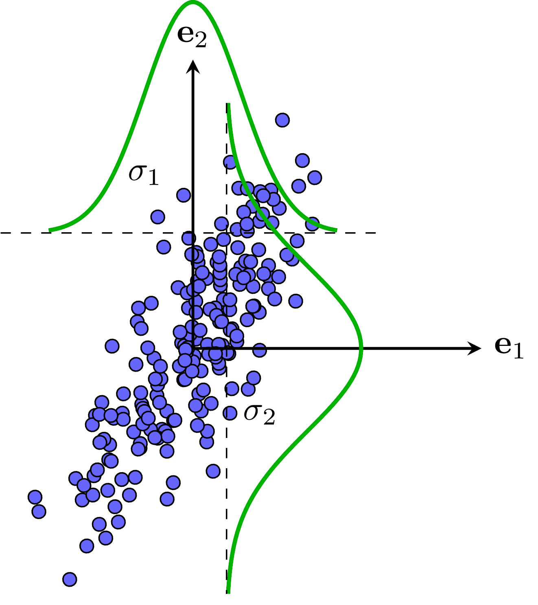
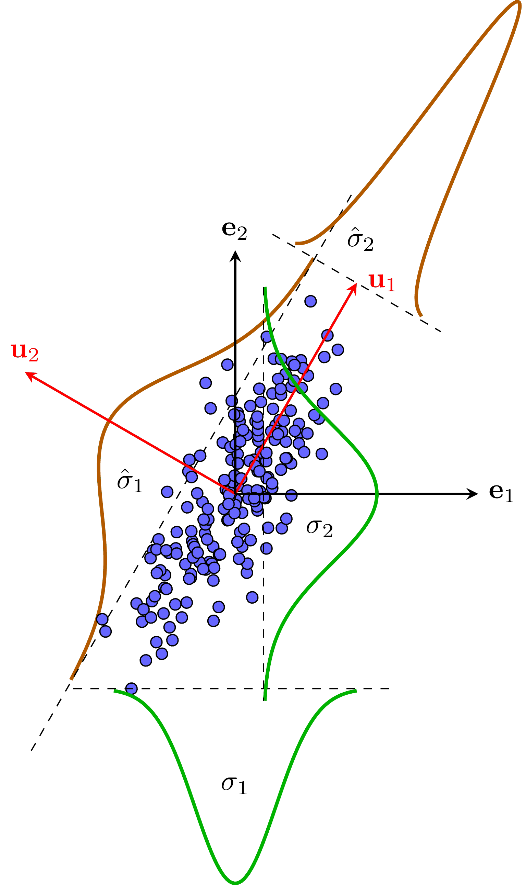
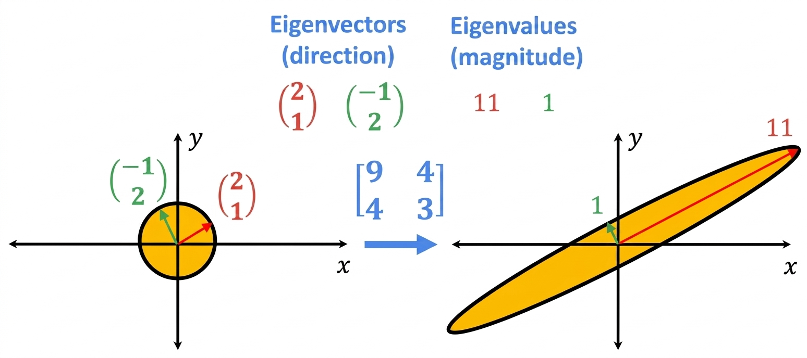
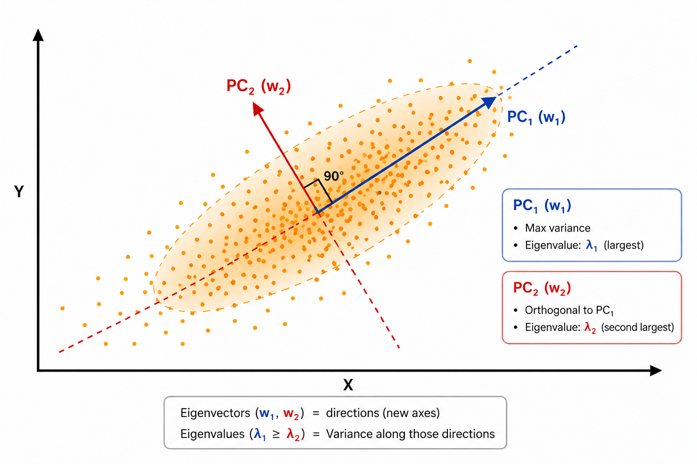
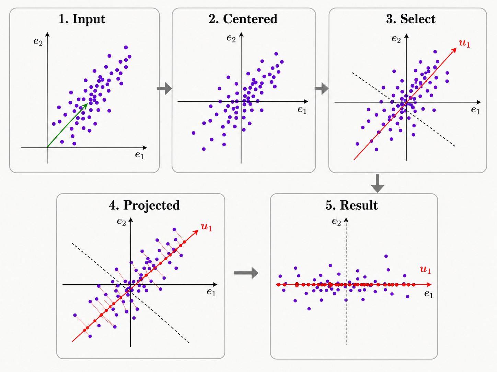
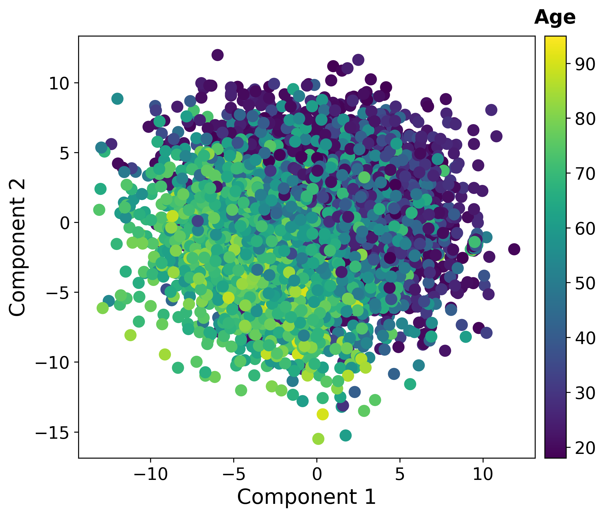
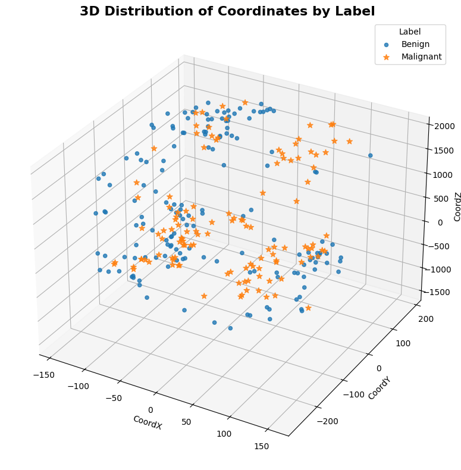

Machine Learning
Dimensionality Reduction (Principal Component Analysis)
UAI · UET · VNU
Teacher: Trinh Ngoc Huynh
Email: huynhtn@vnu.edu.vn
Content
Why do we need PCA? Visual motivation
Mathematical formulation & optimization
Step-by-step implementation
Real-world use cases & examples
When PCA falls short
1.
Intuition
Analyzing the Data
- Consider a standard data cloud in a 2D space.
- What can be observed about the current coordinate axes?
- How is the data spread out?

Question: What happens if we view this data through different orthogonal coordinate systems?
Different Perspectives
- We can project the exact same data onto different spatial dimensions.
- Depending on the chosen axis, the projected data will have different levels of spread.

The Problem PCA Solves
How do we automatically find the specific coordinate system where the data is most spread out?
- PCA seeks to discover these optimal orthogonal axes.
- Core Goal: Maximize the variance of the data when projected onto the new dimensions.

2.
Problem
Definition
Find a new coordinate system where axes are ranked by the amount of variance they capture.
How do we project data onto a candidate axis?
How do we measure the variance of the projected data?
If finding the first direction (PC1), how do we find the next one (PC2) that captures the second-largest variance?
Projection
Let $w$ be a candidate axis (unit vector).
$x_{\text{proj}} = Xw$
Data becomes scalar values on the new axis.

Finding the First Component
$x_1 = X w_1$
$X \in \mathbb{R}^{N \times d}, \; w_1 \in \mathbb{R}^{d}$
$\max_{w_1} \mathrm{Var}(x_1) = \max_{w_1} w_1^T C w_1$
$C \in \mathbb{R}^{d \times d}$ : covariance matrix
$\parallel w_1 \parallel =1 \to w_1^T w_1 = 1$
Prevents arbitrary scaling
$\max_{w_1} \; w_1^T C w_1$
$\text{s.t. } w_1^T w_1 = 1$
Solve via Lagrange multipliers
Optimization Problem
1. Construct the Lagrangian Function:
$$\mathcal{L}(w, \lambda) = w^T C w - \lambda (w^T w - 1)$$
Where $\lambda$ is the Lagrange multiplier for the unit length constraint.
2. Solution:
- Set the derivative to $0$.
- Result: The Eigenvalue Problem.
$$Cw = \lambda w$$ $$\to w^TCw = \lambda$$
Conclusion: We obtain multiple solution pairs $(\lambda_1, w_1),
(\lambda_2, w_2), \dots$
• The variance along each $w_i$ is given by its corresponding eigenvalue $\lambda_i$.
• Action: Choose the eigenvector with the largest
$\lambda$ as principal component ($w_1$).
The Second Component
Maximize remaining variance.
$$\max_{w_2} w_2^T C w_2$$
$w_2$ captures new, independent information.
$$w_2^T w_2 = 1 \quad \text{and} \quad w_2^T w_1 = 0$$
From the Lagrangian derivative $= 0$:
$$C w_2 = \lambda w_2 + \mu w_1$$
$C = C^T$ and $w_2 \perp w_1 \rightarrow \mu = 0$
$$C w_2 = \lambda w_2$$
Geometric Interpretation
Direction of maximum variance.
Maximum remaining variance,
orthogonal to PC1 ($w_2 \perp w_1$).

Key Idea: Rotate the coordinate system to align with the data!
Final Insight
PC1 $\rightarrow$ PC2 $\rightarrow \dots \rightarrow$ PCn
Sequential maximization with orthogonality constraints.
Eigendecomposition solves all at once!
Diagonalizing the covariance matrix.
Eigenvectors = Orthogonal Axes | Eigenvalues = Variance
PCA is a rotation of the coordinate system that perfectly aligns the axes with the directions of maximum variance.
3.
Algorithm
Input & Output
A dataset matrix $X$ of size $N \times d$:
samples
features
orthogonal directions maximizing variance
decreasing progressively
Algorithm Overview
$X_c = X - \mu$
$C = \frac{1}{N}X_c^TX_c$
$C = W\Lambda W^T$
$Z = X_c W$
Summary: Center → Measure → Decompose → Transform
Step 1: Center the Data
$$X_c = X - \mu$$
Subtract the mean from every data point
Move data center to origin → only care about spread
Key Idea: Mean = 0 → variance becomes easy to compute
Step 2: Compute Covariance
$$C = \frac{1}{N} X_c^T X_c$$
Measure how all pairs of features vary together
$C$ is symmetric ($C = C^T$), encodes shape and spread
Key Takeaway: $C \in \mathbb{R}^{d \times d}$ encodes all pairwise feature relationships
Step 3: Eigendecomposition
$$C = W \Lambda W^T$$
Factorize $C$ into eigenvectors and eigenvalues
$W$ = axis directions, $\Lambda$ = variance per axis
Key Takeaway: Reveals the hidden orthogonal structure of the data!
Step 4: Project Data
$$Z = X_c W$$
Map centered data onto principal axes
$X_c \in \mathbb{R}^{N \times d}$ → $Z \in \mathbb{R}^{N \times k}$ with $k \leq d$
Key Takeaway: Features in $Z$ are uncorrelated, sorted from most to least variance
Algorithm Summary

4.
Applications
Dimensionality Reduction
$$\frac{\lambda_i}{\sum_{j=1}^{d} \lambda_j}$$
Variance captured by each component
$$\frac{\sum_{i=1}^{k} \lambda_i}{\sum_{j=1}^{d} \lambda_j}$$
Total information kept using k components
Keep k such that 90% – 95% variance is retained
Data Visualization
k = 2 → visualize in 2D

k = 3 → visualize in 3D

Noise Reduction
$$Z = (X - \mu) W_k$$
Discard low-variance (noise) components.
$$\hat{X} = Z W_k^T + \mu$$
Map back to original space using only $k$ PCs.
Key Insight: Noise tends to lie in low-variance components. Keeping the top $k$ eigenvalues removes noise while preserving the main structure.
Data Compression
Instead of storing $N \times d$ values, store only:
Compressed Data
Basis / Codebook
$$\text{Size} \approx \frac{N \times k}{N \times d} = \frac{k}{d}$$
If $k \ll d$, the savings are massive
1000:1 → Blurry
100:1 → Recognizable
20:1 → Near Perfect ✔
Feature Extraction
Replace original features with Principal Components (PC1, PC2, ...). Each PC is a linear combination of all original features, capturing maximum variance.
Correlated, redundant, high-dimensional
Uncorrelated, compact, ordered by importance
No redundancy between features
$k \ll d$ dimensions
PC1 most important first
Use Cases: Preprocessing for classification, clustering, regression — use PC features instead of raw features for better generalization
5.
Limitations
Linear Method
PCA can only capture linear relationships. If data lies on a curved manifold, PCA will fail to find the true structure.
PCA unfolds linearly — loses the 2D sheet structure
PCA may merge clusters that are separate in the true manifold
Alternatives: Kernel PCA, t-SNE, UMAP, Autoencoders
Variance ≠ Importance
PCA ranks components by variance, but the direction with highest variance may not be the most discriminative for your task.
Classifying handwritten digits — background brightness has high variance but is useless for distinguishing 3 vs 8
PCA may discard the discriminative low-variance features
Alternative: LDA (supervised), or use PCA as preprocessing + task-specific feature selection
Not Interpretable
Each PC is a linear combination of ALL original features. You cannot easily say "PC1 represents height" — it's a mixture of everything.
$0.3x_1 + 0.5x_2 - 0.1x_3 + 0.4x_4 + \dots$
What does this mean? Hard to explain!
In medicine, finance, etc. — stakeholders need explainable features, not abstract projections
Tip: Inspect PC loadings (weights) to understand which original features contribute most to each component
Scaling & Preprocessing
PCA is sensitive to feature scales. Features with larger ranges dominate the variance and the principal components.
Income (0–100,000) dominates Age (0–100)
Both features contribute equally to PCA
Rule: Always standardize (z-score) before PCA: $x \leftarrow \frac{x - \mu}{\sigma}$
Summary
Bottom Line: PCA is a powerful unsupervised tool for dimensionality reduction. Use it wisely with proper preprocessing, and supplement with task-specific methods when needed.